Physics-constrained inference and multimodal representation learning
Maxime RONCERAY CEA Paris-Saclay · CosmoStat · Polymathic AI
Supervisors François Lanusse · Samuel Farrens
The scientific problem
From observed light to physical properties.
WHAT TELESCOPES RECORDlight: images, spectra and photometry
→
WHAT WE WANT TO INFERredshift · mass · dust · star-formation history
Different histories of gas and stars leave different signatures in that light.
Real HSC and COSMOS validation crops · 10×10×6 run fy947o8d · step 25402.
Two complementary approaches
Two ways to learn about galaxies.
01
Learning with physics
Explain measured light with an analytic galaxy model.
Physical parameters + posterior uncertainty02
Learning from observations
Pre-train reusable representations across surveys.
Embeddings + downstream tasks
01 · PHYSICS-CONSTRAINED
Use physics to explain the observed light.
Inferring galaxy properties from photometric measurements
The physical-inference question
How can Bayesian SED fitting scale to millions of galaxies?
THE CHALLENGEPhysical SED fitting is informative, but expensive.
Repeated calls to a detailed forward model are costly at survey scale; real observations also test whether posterior uncertainties are trustworthy.
MY GOALBuild and evaluate amortized inference.
Use a differentiable model to infer galaxy properties, then compare with the published Pop-COSMOS baseline on matched COSMOS observations.
What we observe
Photometry measures flux through each survey filter.
Rubin / LSSTEuclidRoman
The colours identify the survey family, not the galaxy's intrinsic colour.
Synthetic DSPS example · one flux and uncertainty per filter band; displayed point colours group survey families.
From telescope to photometry
The telescope and camera shape which light reaches the detector.
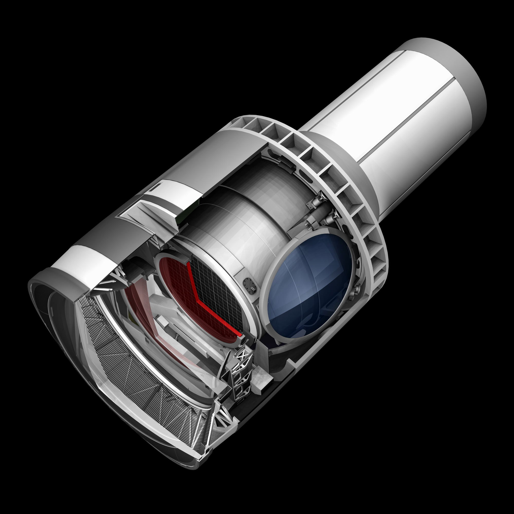
Rubin LSSTCamMirrors and camera optics focus the sky onto a detector through one selected filter.
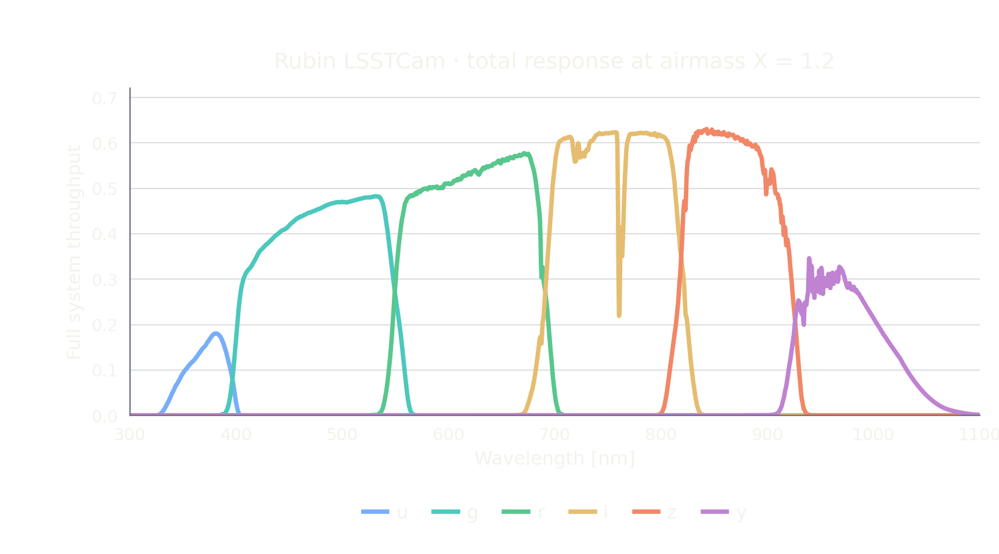
Six broadband responsesThe curves combine atmosphere, telescope optics, filter, and detector. The band letters label wavelength ranges, not exact colours.
Weight the spectrum by a band's full response and integrate: one broadband flux per filter.
“Transmittance of the light” -> talk about telescopes; we can use a beautiful image of the LSST filters, like the example.
Le vocabulaire distingue la transmission du filtre de la réponse complète du système. La caméra Rubin LSSTCam est montrée avec ses six courbes de réponse système et l'intégration qui produit un flux par bande.
Do posterior regions contain the reference as often as expected?
Calibrated target: 2/3
Synthetic redshift is near target. Both observed results fall below it.
MIRA: Sharief et al. (2026), arXiv:2605.02014. This score alone does not certify absence of directional bias.
Physical modeling · takeaway
A useful method, with a real-data calibration gap.
CONTRIBUTIONAmortized joint inference over 15 physical parameters.
On redshift, MIRA is comparable to Pop-COSMOS: 0.630 vs 0.622; neither reaches the calibrated target.
LIMITATIONSynthetic calibration does not transfer to COSMOS.
The synthetic PIT is close to uniform; both real-data posteriors are overconfident.
INTERPRETATIONThe physical model is only an approximation to the sky.
Imperfect priors or model misspecification are possible explanations, not causes isolated by this test.
This motivates a complementary, fully data-driven approach.
02 · DATA-DRIVEN
Learn reusable representations directly from survey data.
Continuous tokenization + multimodal foundation modelling
Foundation models
Train once, adapt to many tasks.
PRE-TRAINOne shared model learns from large, diverse datasets.ADAPTThe same representation supports many downstream tasks.
Bommasani et al. (2021), “On the Opportunities and Risks of Foundation Models”, Fig. 2.
A multimodal foundation model
AION-1→ AION-2
AION-1 overview: Parker et al. (2025), Fig. 1, arXiv:2510.17960. The figure describes AION-1.
Avant cette slide prend une slide foundation model avec l'image Bommasani et al. 202 des foundation model ou j'expliquerais ce que c'est
Une slide dédiée est ajoutée juste avant, avec la figure 2 de Bommasani et al. et une lecture simple “pré-entraîner une fois, adapter à plusieurs tâches”.
Second part of my internship
AION-2 improvements
AUGUST RUN
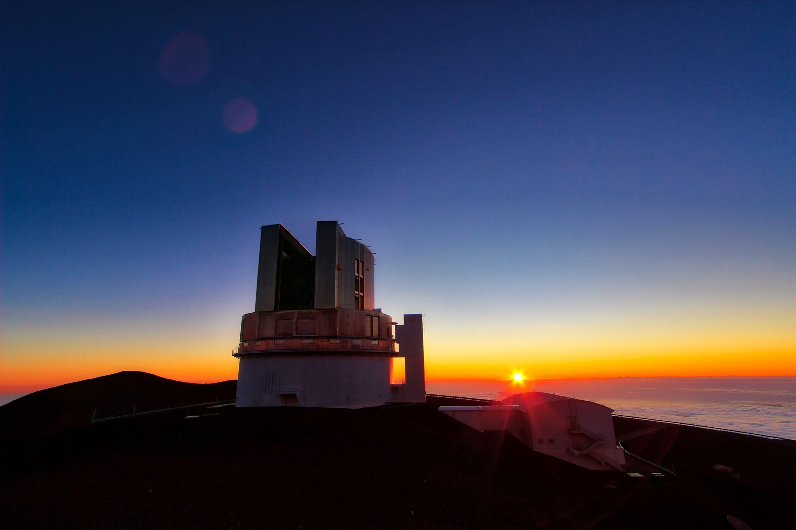
HSCSubaru · images
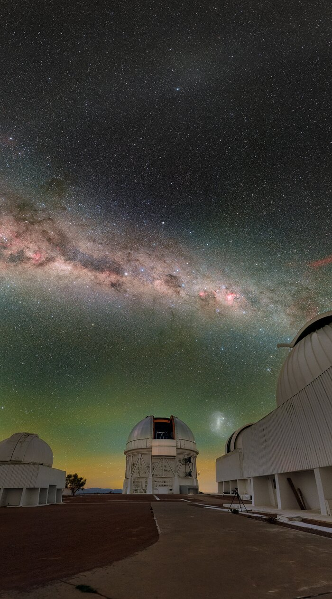
Legacy SurveyDECaLS · images
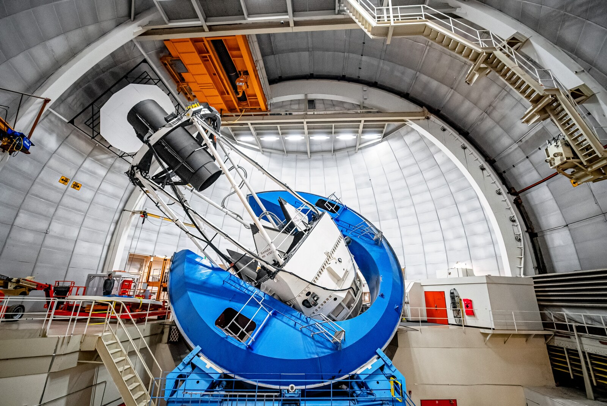
DESIMayall · spectra
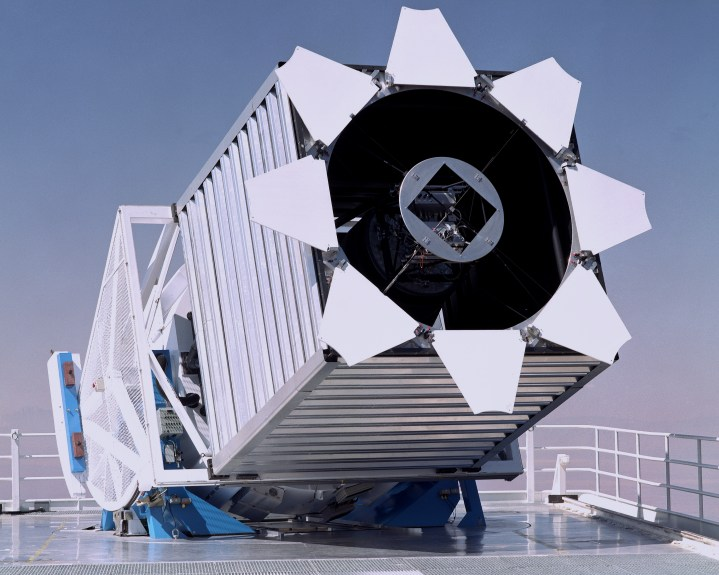
SDSSSloan · spectra
NEXT
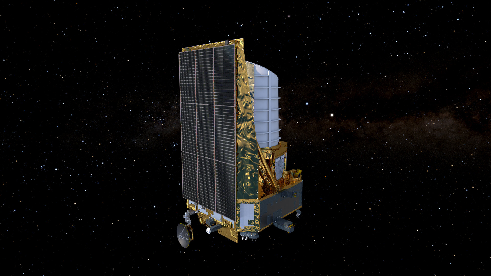
Euclid Q1Euclid · images
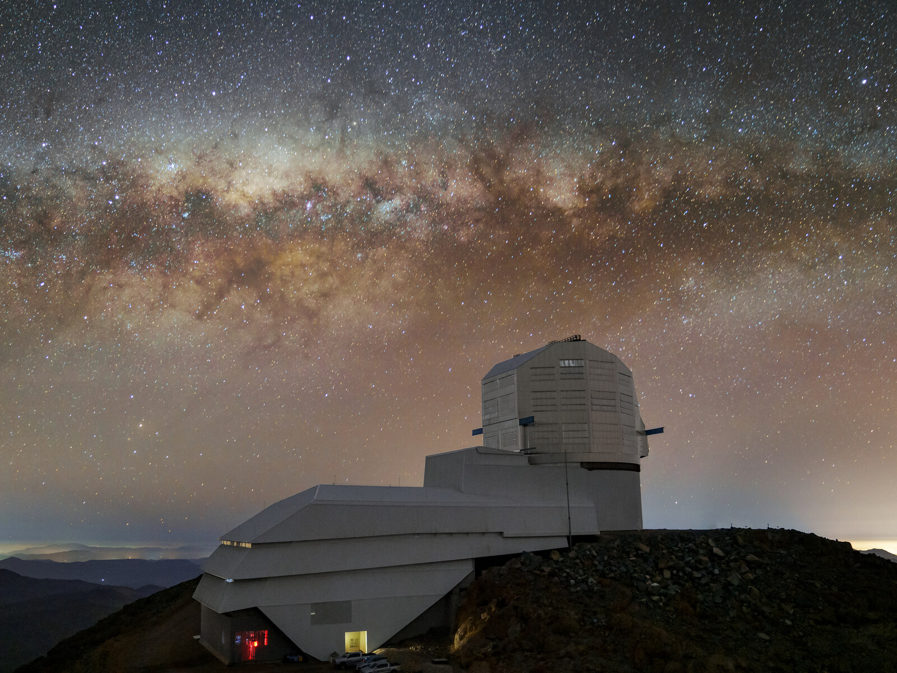
LSST DP2Rubin · images
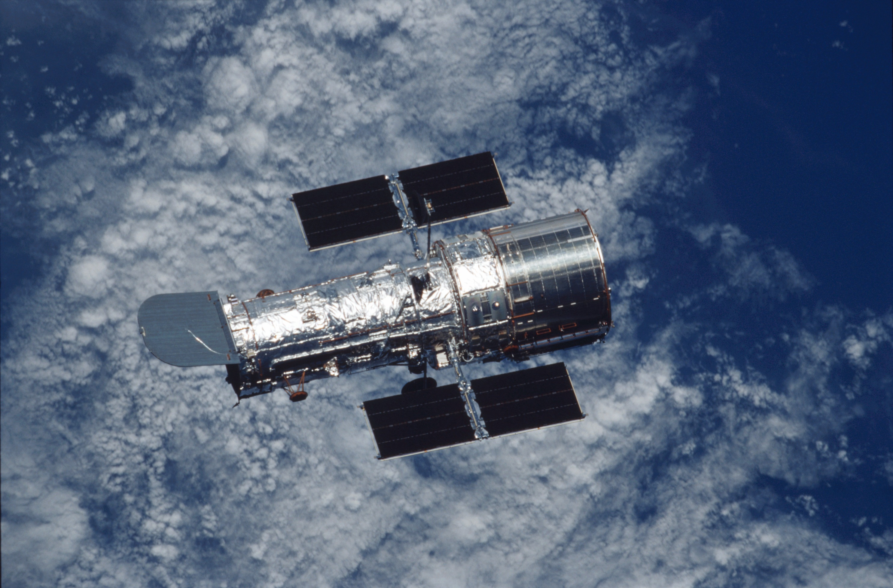
COSMOSHubble / ACS
More surveys broader image coverageContinuous tokens instead of discrete identifiers
Photo credits: NAOJ (V. M. Passegger) · NOIRLab (Mayall/DESI: M. Sargent; Rubin: H. Stockebrand; Blanco: P. Horálek) · SDSS · ESA · NASA.
Preparing the data
~100 TB of survey data → ~300 GB of prepared token tables.
For a language model, a token is a small numerical unit of input, often part of a word. For AION, each token summarizes part of an astronomical observation.
MMU scale: Audenaert et al. (2024). Approximate public archive (~100 TB) → prepared tables (~300 GB) for processed surveys; different scopes, not a lossless compression ratio.
retire le "instrument specific array"
La mention “instrument-specific arrays” est retirée.
"store in data lake" plutot
Le libellé devient “stored in the data lake”.
Il faut changer cette slide. AU dessus des deux bloc je veux une petite explication de ce qu'est un token pour les LLM. Et sur les bloc rend les un peu plus petit
Une définition comparative LLM/AION est ajoutée au-dessus du schéma et les deux blocs sont réduits pour préserver de l’air autour de l’explication.
My ML contribution · image tokenizer
I adapted a learned encoder-decoder into an astronomical tokenizer.
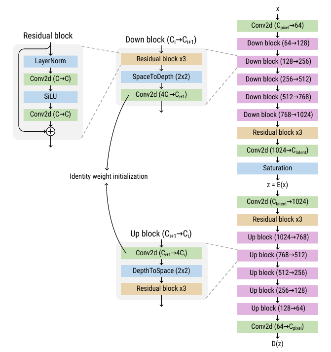
DESIGN BASISLoLa encoder-decoder
ADAPTATIONMultiband survey images
STUDIED BOTTLENECKSix continuous values per token
Architecture adapted from Rozet et al. (2025), “Lost in Latent Space”; highlighted block is the continuous latent bottleneck.
My ML contribution · image compression
One image becomes 100 six-dimensional token vectors.
Slide 23: Maybe show that the image gets compressed into very few numbers: image, few tokens, image.
La slide montre maintenant une entrée HSC, une grille 10 × 10 de 100 tokens à six valeurs, puis sa reconstruction. Le nombre de valeurs passe de 153 600 à 600.
HSC PDR3 DUD · W&B run fy947o8d · step 25402 · AION-1: 576 discrete positions (Parker et al., 2025); token count only, not matched bitrate or reconstruction quality.
Distributed ML engineering
Distributed training on 64 H100 GPUs at Jean Zay.
199 Mparameters
100koptimisation steps
4 surveysimages + spectra
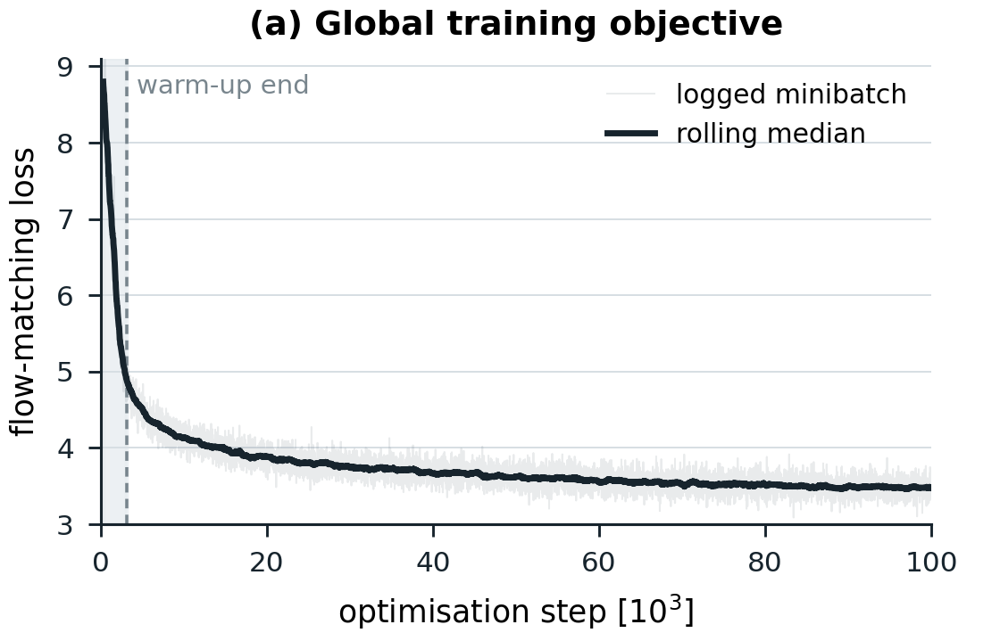
Global training objective · 100,000 steps
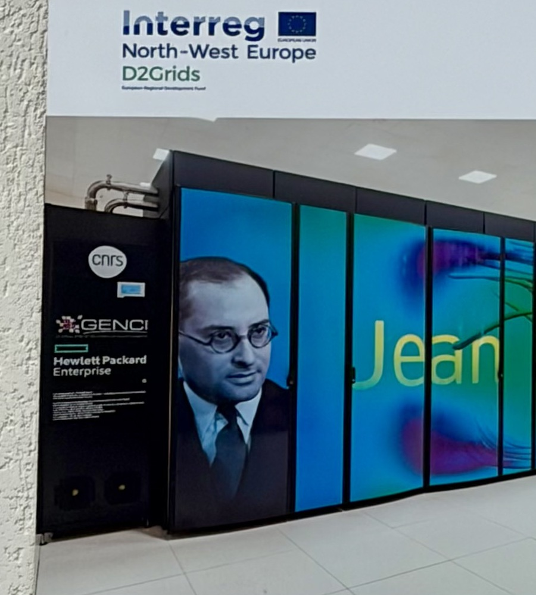
Jean Zay · public IDRIS information panel
I prepared the data pipeline and deployed this distributed run.
64 H100 GPUs · 16 nodes · FSDP2 · image: Clemcloum8, Wikimedia Commons, CC0 1.0 (cropped from the Jean Zay information panel).
Evaluating the representation
Can frozen AION embeddings recover redshift?
INPUTDESI spectrum
→
ENCODERAION-2FROZEN
→
REPRESENTATIONEmbeddings
→
TRAINABLESmall prediction headOnly this is trained
→
TARGETSpectroscopic redshift
Spatially held-out test set · N = 11,363
Prediction head
R2
Linear regression after mean pooling
0.373
Cross-attention over all tokens
0.988
A physical quantity is recoverable without an explicit galaxy-physics decoder.
DESI spectroscopic redshift; distinct from photometric redshift inference on COSMOS in Part 1.
Beyond the original benchmark
AION-1 is already being reused.
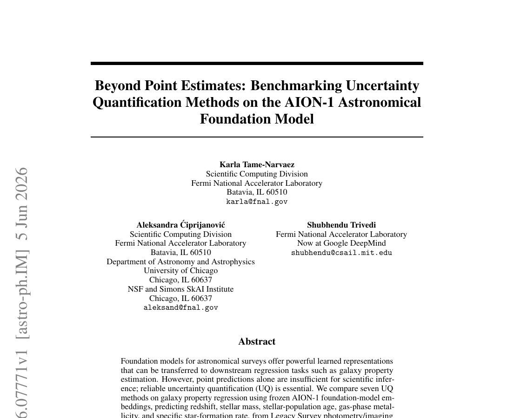
Uncertainty quantificationcalibrated intervals for galaxy properties
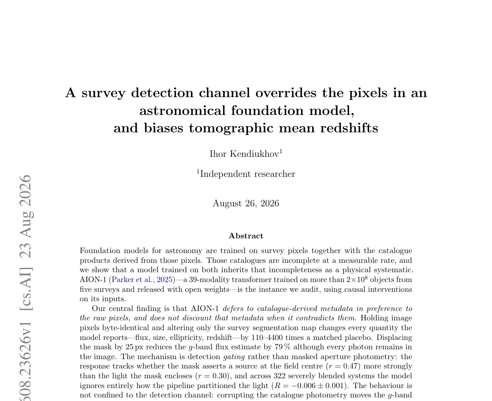
Scientific auditsurvey systematics and redshift bias
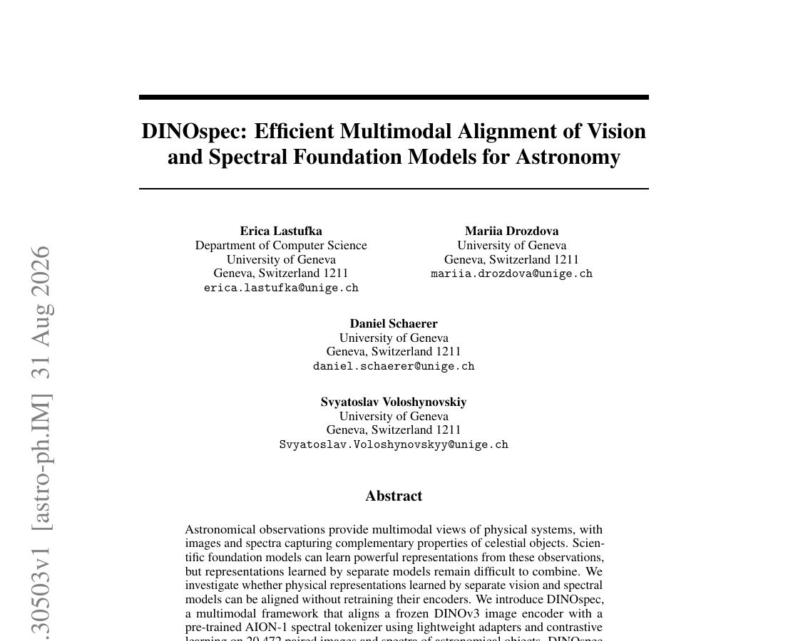
Model compositionaligning image and spectral representations
Tame-Narvaez et al. (2026), arXiv:2606.07771 · Kendiukhov (2026), arXiv:2608.23626 · Lastufka et al. (2026), arXiv:2608.30503.


 This is a matter of state.
This is a matter of state.


 Same image dimensions
Same image dimensions